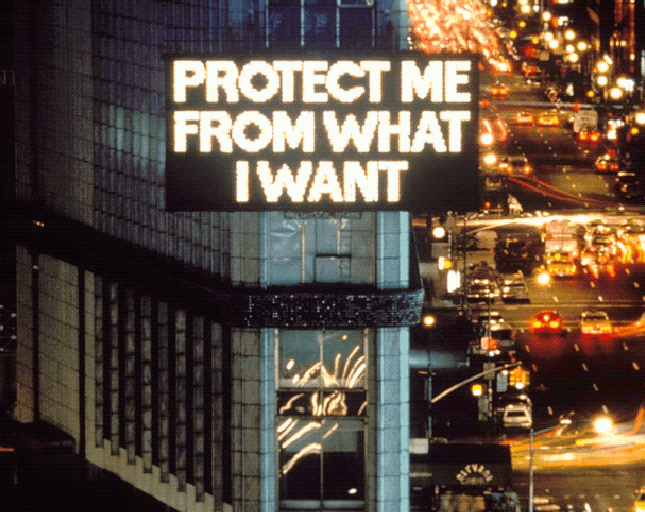
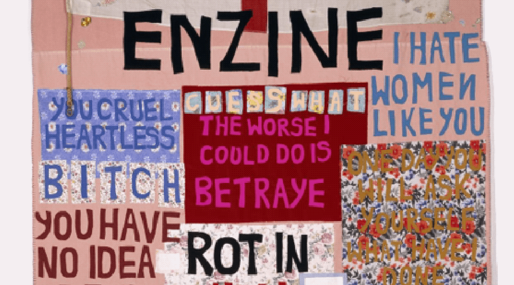

STRONGLY WORDED WOMEN
Welcome to The Strongly Worded Women Collection, dedicated to celebrating the work and contributions of women word artists.
These artists have used the power of language and typography to convey powerful messages and provoke social and political commentary. This collection showcases the works of iconic artists such as Corita Kent and Barbara Kruger, who have blazed a trail for future generations of women artists. From the pop-art inspired designs of Kent to the bold and striking text of Kruger, these artists have left an indelible mark on the world of art and design. Join us as we explore the works and legacies of these inspiring women and their impact on the art world.

Power of Poetry
Poetry has the ability to convey complex emotions and ideas in a concise and memorable form, making it an ideal tool for social and political commentary. By using language to challenge dominant narratives and offer alternative perspectives, poets and word artists can help to raise awareness about social injustices and inspire meaningful change. Whether through spoken word performances, written works, or other forms of artistic expression, word art and poetry have the power to inspire and mobilize communities towards greater social and political equality.
Poetry has the ability to convey complex emotions and ideas in a concise and memorable form, making it an ideal tool for social and political commentary. By using language to challenge dominant narratives and offer alternative perspectives, poets and word artists can help to raise awareness about social injustices and inspire meaningful change. Whether through spoken word performances, written works, or other forms of artistic expression, word art and poetry have the power to inspire and mobilize communities towards greater social and political equality.
“Each canvas contains a different word or phrase for describing women; entries range from sweet nothings to fuck-yous, but it’s the daunting size of the installation that leaves one reeling.”
— Kat Herriman, Artsy, Speaking towards Betty Tompkins’s WOMEN Words, Phrases, and Stories 2016 exhibition
— Kat Herriman, Artsy, Speaking towards Betty Tompkins’s WOMEN Words, Phrases, and Stories 2016 exhibition
“We’ve discovered that ridicule and humiliation, backed up by irrefutable information, can disarm the powers that be, put them on the spot, and force them to examine themselves,”
— Guerrilla Girls on Reinventing the ‘F’ word: Feminism
— Guerrilla Girls on Reinventing the ‘F’ word: Feminism
“Short machine-gun bursts of words that when isolated, and framed by Kruger’s gaze, linger in your mind, forcing you to think twice, thrice about clichés and catchphrases, introducing ironies into cultural idioms and the conventional wisdom they embed in our brains.”
— Ron Rosenbaum, Smithsonian Magazine, Speaking towards Barbara Kruger’s 2012 Hirshhorn Permanent exhibition
— Ron Rosenbaum, Smithsonian Magazine, Speaking towards Barbara Kruger’s 2012 Hirshhorn Permanent exhibition

Highlighting Women Artists
Women artists have long been overlooked and undervalued in the art world. Despite the significant contributions they have made to the field of art, women continue to struggle to gain recognition and equal opportunities compared to their male counterparts. This issue is not limited to a specific time period or region, but rather a global phenomenon that persists to this day. While some progress has been made towards gender equality in the arts, women artists still face significant barriers to achieving equal representation, access to resources, and recognition for their work. Thus, it is crucial that we continue to push for greater visibility and opportunities for women artists, recognizing the importance of diversity and inclusivity in the art world.
Women artists have long been overlooked and undervalued in the art world. Despite the significant contributions they have made to the field of art, women continue to struggle to gain recognition and equal opportunities compared to their male counterparts. This issue is not limited to a specific time period or region, but rather a global phenomenon that persists to this day. While some progress has been made towards gender equality in the arts, women artists still face significant barriers to achieving equal representation, access to resources, and recognition for their work. Thus, it is crucial that we continue to push for greater visibility and opportunities for women artists, recognizing the importance of diversity and inclusivity in the art world.
Word Art
The term "word art" describes a category of text-based postmodernist art employed by several contemporary artists since the 1950s. A simple definition of text-based art might read: "art that includes words or phrases as its primary artistic component". Text-based imagery featuring words and phrases has appeared in a variety of different media including painting and sculpture, lithography and screen-printing as well as applied art (T-shirts, mugs). It also appears in the latest forms of contemporary art, like projection mapping. There are two basic types of "word art": (1) First, artworks that include words or phrases because of their ideological meaning, iconic status or significance as advertising copy. (That is, where the word-content is crucial.) In a sense, word art - whether painted, printed or sculpted - occupies a sort of no man's land between language and visual imagery. When abstracted from their normal setting in books, words and phrases become neither art nor language but a strange hybrid. The pictorial setting, along with increased size, adds a new dimension and power to the words themselves. This is noticeable even in a newspaper's banner headlines - the larger the words, the greater their impact. At the same time, the live verbal message carried by the text remains an indestructible item of content, thus preventing the otherwise abstract work from becoming wholly formalistic. There is one important caveat to the above. The words or phrases used by the artist must be more than mere blocks of data. On Kawara may be a clever conceptualist, but the text in his "Today" series is too minimalist to be more than a conceptual reminder of what is theoretically possible. Much the same can be said of Joseph Kosuth's "Definition Paintings", which are mostly cute juxtapositions. A more difficult issue - raised by some of the public "word art" of Jenny Holzer - concerns the quantity of text - namely, at what point does the sheer number of words overwhelm the artistic setting?
The term "word art" describes a category of text-based postmodernist art employed by several contemporary artists since the 1950s. A simple definition of text-based art might read: "art that includes words or phrases as its primary artistic component". Text-based imagery featuring words and phrases has appeared in a variety of different media including painting and sculpture, lithography and screen-printing as well as applied art (T-shirts, mugs). It also appears in the latest forms of contemporary art, like projection mapping. There are two basic types of "word art": (1) First, artworks that include words or phrases because of their ideological meaning, iconic status or significance as advertising copy. (That is, where the word-content is crucial.) In a sense, word art - whether painted, printed or sculpted - occupies a sort of no man's land between language and visual imagery. When abstracted from their normal setting in books, words and phrases become neither art nor language but a strange hybrid. The pictorial setting, along with increased size, adds a new dimension and power to the words themselves. This is noticeable even in a newspaper's banner headlines - the larger the words, the greater their impact. At the same time, the live verbal message carried by the text remains an indestructible item of content, thus preventing the otherwise abstract work from becoming wholly formalistic. There is one important caveat to the above. The words or phrases used by the artist must be more than mere blocks of data. On Kawara may be a clever conceptualist, but the text in his "Today" series is too minimalist to be more than a conceptual reminder of what is theoretically possible. Much the same can be said of Joseph Kosuth's "Definition Paintings", which are mostly cute juxtapositions. A more difficult issue - raised by some of the public "word art" of Jenny Holzer - concerns the quantity of text - namely, at what point does the sheer number of words overwhelm the artistic setting?